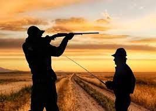

Andrea Ruzittu
ruzittu.andrea97@gmail.com
scorri giù Ciao mi chiamo Andrea Ruzittu, sono nato il 16/09/1997 ad Olbia, in Sardegna. Vivo in un paese del nord Gallura e ambisco a diventare un ottimo web developer.
Non ho un hobby ben definito, amo fare molte cose, mi piace andare a pesca, a caccia qualche volte, giocare ai videogames, infatti ho appena acquistato una ps5, inoltre amo molto l'informatica in ogni sua sfaccettatura.
Sono una persona a cui piace molto sperimentare e imparare cose nuove, sopratutto negli ambiti in cui sento di avere una passione innata, ho deciso ultimamente di seguire questo corso per costruirmi un futuro come lo desidero io prima che sia troppo tardi.
- Le mie competenze:
- Inglese B2
- Wordpress
- Conoscenza di Meta
- Competenze da acquisire
- Html
- Css
- Javascript
| Istruzione | Esperienze professionali |
| Licenza media | Viticoltore |
| Diploma di maturità | Impiegato amministrativo |
| Laurea triennale | Noleggiatore gommoni |